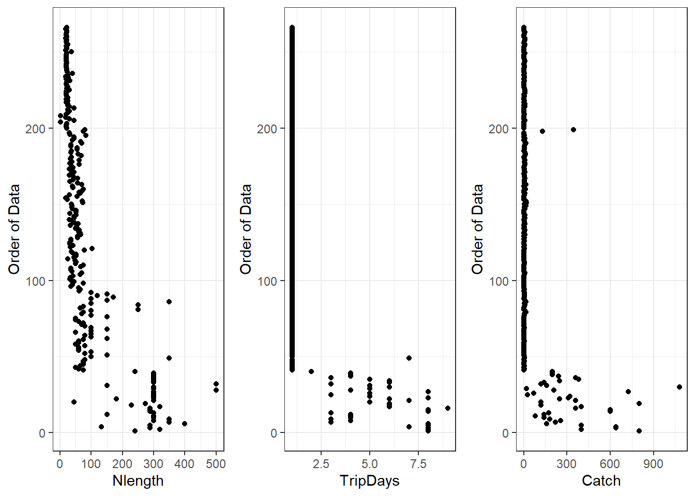
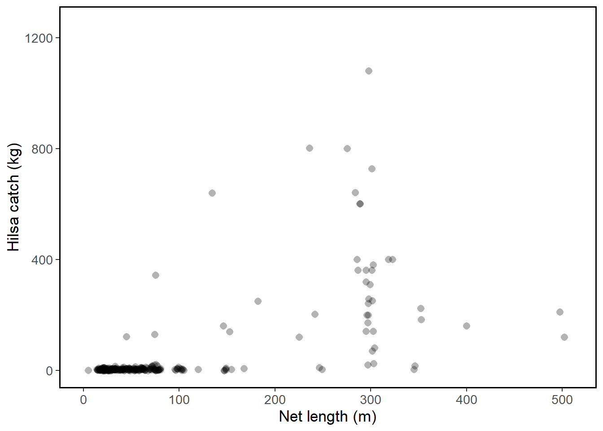
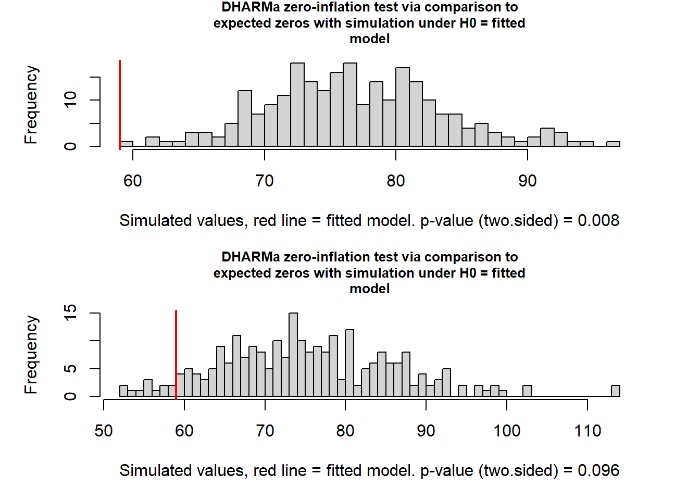
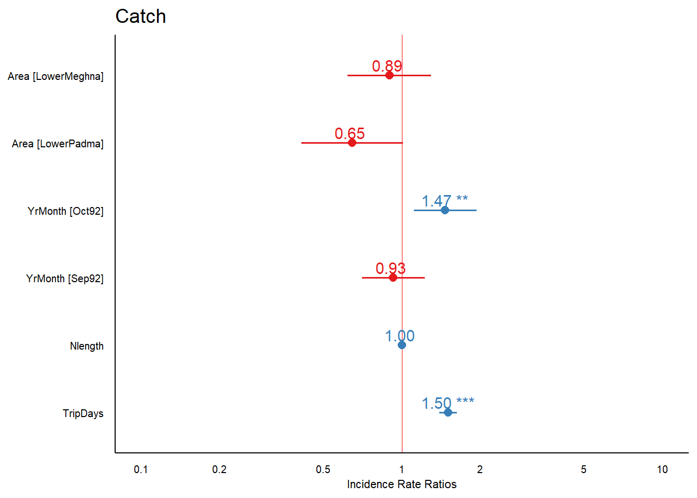
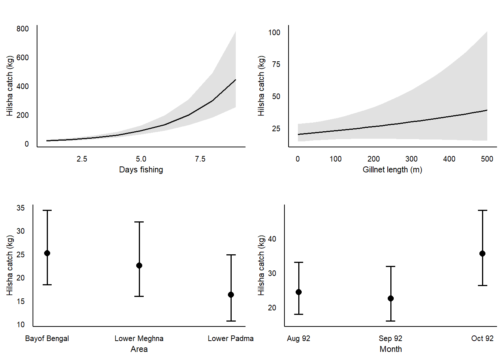
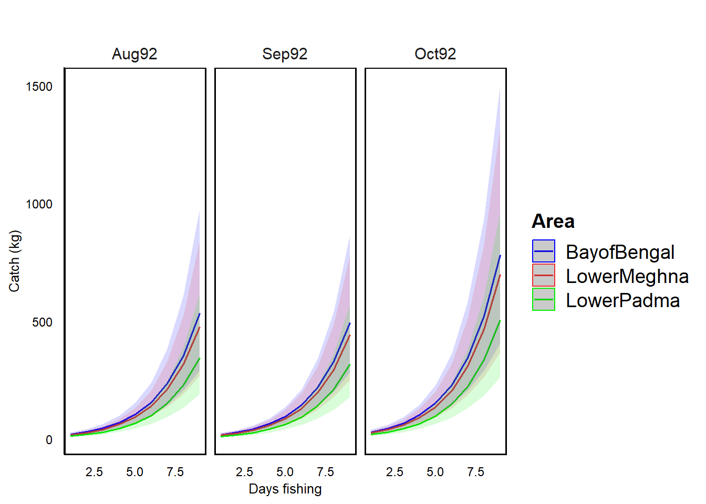
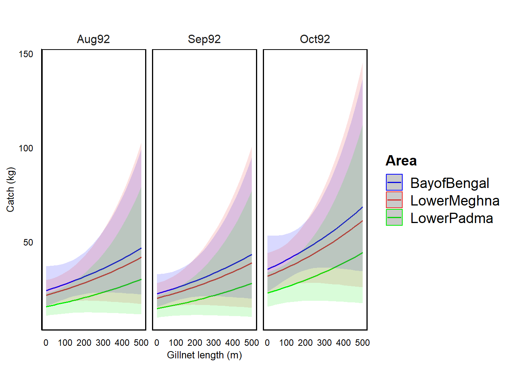

R code for hilsa (Tenualosa ilisha) CPUE data: zero inflated models
Note that we are using a data file that has already been explored and modified to remove outliers. Read the introduction to the model to see where to find the original data file and explanation on data exploration
Data exploration: outliers

Normality and homogeneity of variance
The plots below show that we have a lot of zero observations in our data. The variance is not homogenous, since variance in catch varies across number of trip days or net lengths used.


How many zeros in the data?
round(sum(hils$Catch == 0) * 100 / nrow(hils),0)[1] 22Our data shows 22% of zeroes in the data.
MODEL
Our aim is to standardise hilsa catch (kg) as a function of effort (trip days and net length) among months and regions To demonstrate the process of model development we start with a Poisson distribution and include all covariates
M1 <- glmmTMB(Catch ~ Area + Nlength + TripDays + YrMonth,
family = "poisson"(link = "log"),
data = hils)as(<dgCMatrix>, "dgTMatrix") is deprecated since Matrix 1.5-0; do as(., "TsparseMatrix") insteadcheck_overdispersion(M1)# Overdispersion test
dispersion ratio = 74.825
Pearson's Chi-Squared = 19379.679
p-value = < 0.001Overdispersion detected.The model is overdispersed (p < 0.001). Clearly this is related to the number of zeroes in our data.
Now we try a negative binomial distribution
M2 <- glmmTMB(Catch ~ Area + YrMonth + Nlength + TripDays,
family = "nbinom1"(link = "log"),
ziformula=~ 0,
data = hils)
check_overdispersion(M2)# Overdispersion test
dispersion ratio = 0.891
Pearson's Chi-Squared = 229.806
p-value = 0.896No overdispersion detected.The overdispersion statistic is better, but the fit can still be improved. For that we handle dependency due to area (spatial) and month (temporal) as random terms.
M3 <- glmmTMB(Catch ~ TripDays + Nlength +
(1|Area) + (1|YrMonth),
family = "nbinom1"(link = "log"),
ziformula=~ 0,
data = hils)
check_overdispersion(M3)# Overdispersion test
dispersion ratio = 0.879
Pearson's Chi-Squared = 228.581
p-value = 0.92No overdispersion detected.Overdispersion is fine, but we can a warning that the model is probably overparameterised. This is because the data does not contain enough information to estimate model parameters properly). So we will use a zero-inflated negative binomial model (ZINB1)
# Try a zero-inflated negative binomial model (ZINB1)
M4 <- glmmTMB(Catch ~ Area + Nlength + TripDays + YrMonth, # models count data
family = "nbinom1"(link = "log"),
ziformula=~ 1, # models binomial data
data = hils)
check_overdispersion(M4)# Overdispersion test
dispersion ratio = 0.894
Pearson's Chi-Squared = 229.807
p-value = 0.888No overdispersion detected.Now the dispersion ratio is clearly smaller than 1, so the model is a bit underdispersed. We will next include the area and time into both the count data and the binomial data part.
# Zero-inflated negative binomial (ZINB2)
M5 <- glmmTMB(Catch ~ Area + Nlength + TripDays + YrMonth, # models count data
family = "nbinom1"(link = "log"),
ziformula =~ Area + YrMonth, # models binomial data
data = hils)
check_overdispersion(M5)# Overdispersion test
dispersion ratio = 0.911
Pearson's Chi-Squared = 230.600
p-value = 0.841No overdispersion detected.Compare all models using Akaike information criterion
Out <- AIC(M1,M2,M3,M4,M5)
rownames(Out) <- c("Poisson GLM",
"NB GLM",
"NB GLMM",
"ZINB1 GLM",
"ZINB2 GLM")
colnames(Out) <- c("df", "AIC")
round(Out,0) df AIC
Poisson GLM 7 11939
NB GLM 8 1904
NB GLMM 6 1911
ZINB1 GLM 9 1906
ZINB2 GLM 13 1913The negative binomial GLM model (M2) has the lowest AIC value, so we consider it the best model. Next, we will simulate new data from model parameters and plot this datas as a frequency histogram. We expect the observed number of zeros in the data should fall within a the histogram for simulated number of zeros. We will do that with both model 2 and model 3 (even though we had a warning when we ran model 3)
par(mfrow = c(2,1), mar = c(5,5,3,3))
# Model M2 (NB GLM)
testZeroInflation(M2)
DHARMa zero-inflation test via comparison to expected zeros with
simulation under H0 = fitted model
data: simulationOutput
ratioObsSim = 0.76227, p-value = 0.008
alternative hypothesis: two.sided# Model M2 (NB GLMM)
testZeroInflation(M3)
DHARMa zero-inflation test via comparison to expected zeros with
simulation under H0 = fitted model
data: simulationOutput
ratioObsSim = 0.77705, p-value = 0.096
alternative hypothesis: two.sidedWe see that the second model produces a more likely distribution of data relative to our observation (red line, or observed number of zeros, fall within the simulated values), although the model cannot fully estimate all paramters given this dataset.
Plot model outputs and parameters
We plot model outputs to show predictions on how catches will depend on the number of days spent fishing and gillnet lengths.


We can also plot how catches depend on the trip length during different months and in different fishing areas.


Plot model parameter estimates in a publication format
Random effect variances not available. Returned R2 does not account for random effects.| NB GLM (Hilsha) | |||
|---|---|---|---|
| Coeffcient | Log-Mean | Conf. Int (95%) | P-value |
| (Intercept) | 2.49 | 2.06 – 2.92 | <0.001 |
| Area [LowerMeghna] | -0.11 | -0.48 – 0.26 | 0.556 |
| Area [LowerPadma] | -0.44 | -0.89 – 0.01 | 0.056 |
| YrMonth [Oct92] | 0.38 | 0.10 – 0.66 | 0.007 |
| YrMonth [Sep92] | -0.08 | -0.35 – 0.20 | 0.596 |
| Nlength | 0.00 | -0.00 – 0.00 | 0.174 |
| TripDays | 0.41 | 0.33 – 0.49 | <0.001 |
| Observations | 266 | ||
| R2 conditional / R2 marginal | NA / 0.960 | ||